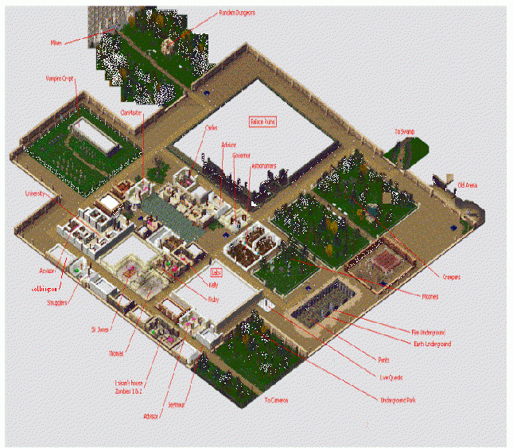

Aston

This overhead view is made from over 750 screenshots. The paint bitmap is a 48 Mb file.
When you arrive in Aston you will be greeted by Seymour who will offer you rank and status in return for risking your life. Not a very good bargain but Hey! it's the only game in town so why not. First however I recommend that you make your way to the main square and touch the transporter (you did touch the one on the way out of Cameron didn't you?).
Firstly will ask you to investigate Loisan's house back in Cameron, and bring him a skull. (a plain skull found on a Zombie corpse from Zombie 1)
Then he will request a Silver Skull. Use the plain skulls you have collected in the Plain Shrine until you gat a silver Skull. You may need to go on a Zombie killing spree to get more skulls as you will get a lot of torches etc, the process is random. tIn V3.0 (Hel) there is a 1:30 chance of getting a skull each time you try, however in 3.5 (Urd) the chances are much improved..
Next he will ask you to further investigate and find out the fate of Loisan. You will find Loisan's corpse at the end of Zombie 2 in the room with 3 shrines( see Zombies Map ) There is a note on Loisan's corpse you will need for Seymour. Take the note back to Seymour. He will thank you and direct you to see Kelly & the Governor. (Who is, by the way, Insane)
Smugglers:
Just a little way up the road from Loisan's house is another door with the entrance to the Smugglers quest inside. (lvl 15) (See Smugglers Map)
Jobbington:
Just past smugglers is a door leading to Jobbington. There you will meet Mr Jones who has jobs of varying difficulty for you. Each completed job results in Brownie Points in Mr Joneses book. These can be accumulated, and asking Mr Jones for an offer will result in a choice of rewards.
.... Under Development more info to come ... ( see jobbington )
Kelly Quest1:
Creepers , go kill the Huge Creeper and bring it's head back to Kelly.
( See Creepers Map )
Kelly Quest 2:
Underground Park. The quest here is simple locate, and touch to memorize, all 3 shrines. Be sure and bring a recall scroll for an quick way out ( See Underground Park map )
Moonies :
Go to the Astronomers building just south of Aston Square, talk to Gerassimo (not the babbling fool Geronimo) and agree to retrieve notes stolen by the Moonies. You can also get dagger / sword of moon from moonies which you will need later for the lvl 65+ Werewolves quest in Cameron (See Moonies Map)
Vampires :
When you are strong enough (Lvl 19) go and talk to Thomas, he will direct you to his master Sir Jones who will ask you to kill the strongest creature you can find in the crypt. Head for the cemetery and do as he requests. ( See Vampires Map ) Then go back and do it all again for second Vamp Lord (20-24) You will gain experience when you kill the Vamp Lord 2 but Sir Jones will have nothing to say to you, so don't bother going back to him
Kelly Quest 3 :
Swamp This is a series of small quests (lvl 24-32). (See Swamp Map) You will also find Ruby here, along the first left turn, wanting a swamp beast head.
Carlos Quest:
Remember that locked door in the Spike Trap room at top of Vamps 2, Well Carlos will give you a key and you can go visit the Dragons in there ( Lvl 30+) (See Carlos Map)
Other Areas of Interest
Labs:
Here you face the challenges of Ishtar's Labyrinths and the Gatekeeper for those who are ready to Arch or Seyan... (see LABS page)
Mines:
This is where you get GU & SU to enhance your equipment or sell., Guarded by silver and gold golems Lvls 10-80. (see Mines Page)
Random Dungeons:
Created by the Wizard of Yendor (rodneY) these random Dungeons have 1 or 2 shrines with mystical powers in each of them, There are 90 dungeons (10-99) (see RD Page)
Rodney's Warped World:
Take the stairs down from the entrance to Random Dungeons and you come to Rodney's Warped World. If you are of too low a level the Attendant there will warn you.... do not ignore the warning. (See RWW page)
Pents:
Ishtar's famous Pentagram Quest. Test pents is to check whether you can hack it without risk, the rest are real, look at door (shift click) to see what is inside before entering, death can be very sudden here.
Earth Underground:
Entrance is in the Tent shaped door in Pents Pit, (see EU Page)
Fire Underground:
Entrance is in the Tent shaped door in Pents Pit, (see FU Page)
Ruby's House:
Next to Kelly this is where you get your reward, a Ruby Weapon, you must have done at least 2 of her Favors. ( See Ruby Page )
Sewers:
Entered down ladder next to Blue Sq in Aston main Sq. (see Sewers page)
Long Tunnels: V3.0 Location..... (Moved next to Clara in V3.5)
Want to see just how far you can get on just the HP you start with. No healing spells or pots here. Rewards of Military or regular Experience (See Long Tunnels Page)
Last Edited Sunday May 15, 2011 02:51:42 PM